CHEMISTRY II: WATER AND ORGANIC
MOLECULES
Table of Contents
It can be quite correctly argued that life exists
on Earth because of the abundant liquid water. Other planets have
water, but they either have it as a gas (Venus) or ice (Mars). This
relationship is shown in Figure 1. Recent studies of Mars reveal the
presence sometime in the past of running fluid, possibly water. The
chemical nature of water is thus one we must examine as it permeates
living systems: water is a universal solvent, and can be too much of
a good thing for some cells to deal with.
Water is polar
covalently bonded within the molecule.
This unequal sharing of the electrons results in a slightly positive
and a slightly negative side of the molecule. Other molecules, such
as Ethane, are nonpolar, having neither a positive nor a negative
side, as shown in Figure 2.
|
Figure 2. The difference between a polar
(water) and nonpolar (ethane) molecule is due to the unequal
sharing of electrons within the polar molecule. Nonpolar
molecules have electrons equally shared within their
covalent bonds. Image from Purves et
al., Life: The Science of Biology, 4th Edition, by
Sinauer Associates (www.sinauer.com)
and WH Freeman (www.whfreeman.com),
used with permission.
|
|
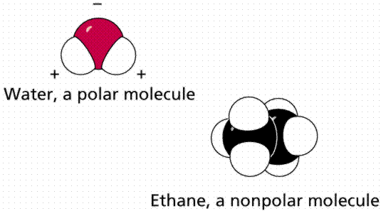
|
These link up by the hydrogen bond discussed
earlier. Consequently, water has a great interconnectivity of
individual molecules, which is caused by the individually weak
hydrogen
bonds, shown in Figure 3, that can be
quite strong when taken by the billions.
|
Figure 3. Formation of a hydrogen bond
between the hydrogen side of one water molecule and the
oxygen side of another water molecule. Image from Purves et
al., Life: The Science of Biology, 4th Edition, by
Sinauer Associates (www.sinauer.com)
and WH Freeman (www.whfreeman.com),
used with permission.
|

|
Water has been referred to as the universal
solvent. Living things are composed of atoms and
molecules within aqueous solutions (solutions that have materials
dissolved in water). Solutions are uniform mixtures of the molecules
of two or more substances. The solvent is usually the substance
present in the greatest amount (and is usually also a liquid). The
substances of lesser amounts are the solutes.
The solubility of many molecules is determined by
their molecular structure. You are familiar with the phrase "mixing
like oil and water." The biochemical basis for this phrase is that
the organic macromolecules
known as lipids
(of which fats are an important, although often troublesome, group)
have areas that lack polar covalent bonds. The polar covalently
bonded water molecules act to exclude nonpolar molecules, causing the
fats to clump together. The structure of many molecules can greatly
influence their solubility. Sugars, such as glucose, have many
hydroxyl (OH) groups, which tend to increase the solubility of the
molecule. This aspect of water is illustrated in Figure 4.
|
Figure 4. Dissolution of an ionically
bonded compound, sodium chloride, by water molecules.
Image from Purves et al., Life: The
Science of Biology, 4th Edition, by Sinauer Associates
(www.sinauer.com)
and WH Freeman (www.whfreeman.com),
used with permission.
|
|
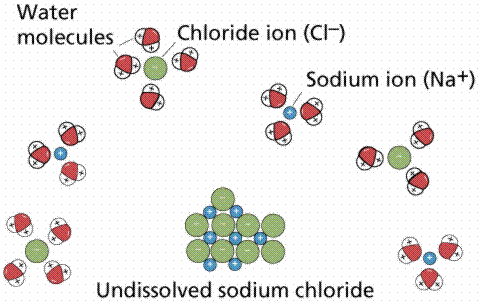
|
Water tends to disassociate into H+ and
OH- ions. In this disassociation, the oxygen retains the
electrons and only one of the hydrogens, becoming a negatively
charged ion known as hydroxide. Pure water has the same number (or
concentration) of H+ as OH- ions.
Acidic
solutions have more H+ ions than OH- ions.
Basic
solutions have the opposite.The pH of several common solutions is
shown in Figure 5. An acid causes an increase in the numbers of
H+ ions and a base causes an increase in the numbers of
OH- ions.
|
Figure 5. pH of
some common items. Image from Purves
et al., Life: The Science of Biology, 4th Edition, by
Sinauer Associates (www.sinauer.com)
and WH Freeman (www.whfreeman.com),
used with permission.
|
|
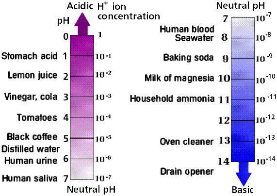
|
The pH scale is a logarithmic scale representing
the concentration of H+ ions in a solution. Remember that
as the H+ concentration increases the OH-
concentration decreases and vice versa . If we have a solution
with one in every ten molecules being H+, we refer to the
concentration of H+ ions as 1/10. Remember from algebra
that we can write a fraction as a negative exponent, thus 1/10
becomes 10-1. Conversely 1/100 becomes 10-2 ,
1/1000 becomes 10-3, etc. Logarithms are exponents to
which a number (usually 10) has been raised. For example log 10
(pronounced "the log of 10") = 1 (since 10 may be written as
101). The log 1/10 (or 10-1) = -1. pH, a
measure of the concentration of H+ ions, is the negative
log of the H+ ion concentration. If the pH of water is 7,
then the concentration of H+ ions is 10-7, or
1/10,000,000. In the case of strong acids, such as hydrochloric acid
(HCl), an acid secreted by the lining of your stomach,
[H+] (the concentration of H+ ions,
written in a chemical shorthand) is 10-1; therefore the pH
is 1.
Organic molecules are those that: 1) formed by the
actions of living things; and/or 2) have a carbon backbone. Methane
(CH4) is an example of this. If we remove the H from one
of the methane units below, and begin linking them up, while removing
other H units, we begin to form an organic molecule. (NOTE: Not all
methane is organically derived, methane is a major component of the
atmosphere of Jupiter, which we think is devoid of life). When two
methanes are combined, the resultant molecule is Ethane, which has a
chemical formula C2H6. Molecules made up of H
and C are known as hydrocarbons. The formulas and structural
representations of several simple organic molecules are shown in
Figure 6.
|
Figure 6. Types of hydrocarbon compounds
and their structure. Images from
Purves et al., Life: The Science of Biology, 4th
Edition, by Sinauer Associates (www.sinauer.com)
and WH Freeman (www.whfreeman.com),
used with permission.
|
|
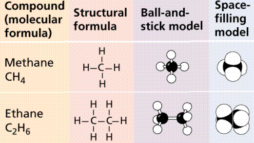
|
|
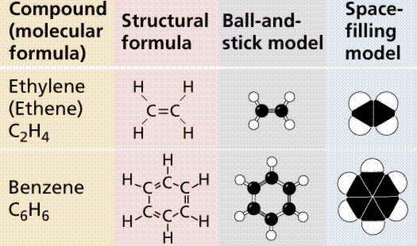
|
Scientists eventually realized that specific
chemical properties were a result of the presence of particular
functional groups. Functional groups are clusters of atoms with
characteristic structure and functions. Polar molecules (with +/-
charges) are attracted to water molecules and are hydrophilic.
Nonpolar molecules are repelled by water and do not dissolve in
water; are hydrophobic. Hydrocarbon is hydrophobic except when it has
an attached ionized functional group such as carboxyl (acid) (COOH),
then molecule is hydrophilic. Since cells are 70-90% water, the
degree to which organic molecules interact with water affects their
function. One of the most common groups is the -OH (hydroxyl) group.
Its presence will enable a molecule to be water soluble.
Isomers are molecules with identical molecular
formulas but differ in arrangement of their atoms (e.g.,
glyceraldehyde and dihydroxyacetone). Selected functional groups and
related data are shown in Figure 7.
|
Figure 7. Functional groups in organic
molecules. Images from Purves et al.,
Life: The Science of Biology, 4th Edition, by Sinauer
Associates (www.sinauer.com)
and WH Freeman (www.whfreeman.com),
used with permission.
|
|
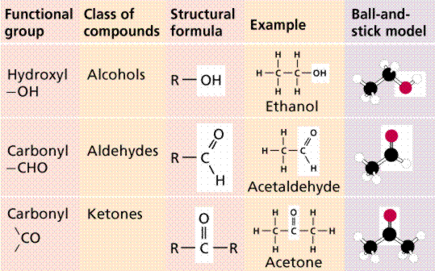
|
|
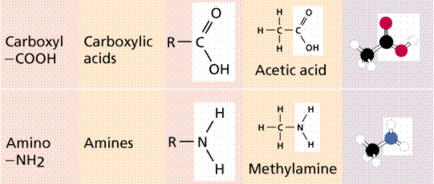
|
|
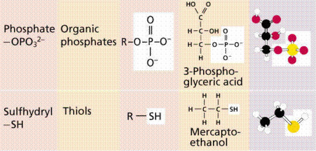
|
Carbon has four electrons in outer shell, and can
bond with up to four other atoms (usually H, O, N, or another C).
Since carbon can make covalent bonds with another carbon atom, carbon
chains and rings that serve as the backbones of organic molecules are
possible.
Chemical bonds store energy. The C-C covalent bond
has 83.1 Kcal (kilocalories) per mole, while the C=C double covalent
bond has 147 Kcal/mole. Energy
is in two forms: kinetic, or energy in use/motion; and potential, or
energy at rest or in storage. Chemical bonds are potential energy,
until they are converted into another form of energy, kinetic energy
(according to the two laws of thermodynamics).
Each organic molecule group has small molecules
(monomers) that are linked to form a larger organic molecule
(macromolecule). Monomers can be jouined together to form polymers
that are the large macromolecules made of three to millions of
monomer subunits.
Macromolecules are constructed by covalently
bonding monomers by condensation reactions where water is removed
from functional groups on the monomers. Cellular enzymes carry out
condensation (and the reversal of the reaction, hydrolysis of
polymers). Condensation involves a dehydration synthesis because a
water is removed (dehydration) and a bond is made (synthesis). When
two monomers join, a hydroxyl (OH) group is removed from one monomer
and a hydrogen (H) is removed from the other. This produces the water
given off during a condensation reaction. Hydrolysis (hydration)
reactions break down polymers in reverse of condensation; a hydroxyl
(OH) group from water attaches to one monomer and hydrogen (H)
attaches to the other.
There are four classes of macromolecules
(polysaccharides, triglycerides, polypeptides, nucleic acids). These
classes perform a variety of functions in cells.
1. Carbohydrates
have the general formula [CH2O]n where
n is a number between 3 and 6. Note the different CH2O
units in Figure 8. Carbohydrates function in short-term energy
storage (such as sugar); as intermediate-term energy storage (starch
for plants and glycogen for animals); and as structural components in
cells (cellulose
in the cell
walls of plants and many protists), and
chitin in the exoskeleton of insects and other arthropods.
Sugars are structurally the simplest
carbohydrates. They are the structural unit which makes up the other
types of carbohydrates. Monosaccharides
are single (mono=one) sugars. Important monosaccharides include
ribose (C5H10O5), glucose
(C6H12O6), and fructose (same
formula but different structure than glucose).
|
Figure 8. The chain (left) and ring
(center and right) method of representing
carbohydrates. Image from Purves et
al., Life: The Science of Biology, 4th Edition, by
Sinauer Associates (www.sinauer.com)
and WH Freeman (www.whfreeman.com),
used with permission.
|
|
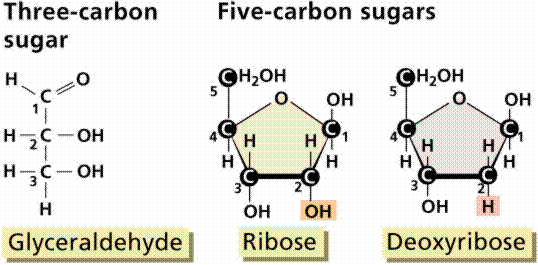
|
We classify monosaccharides by the number of
carbon atoms and the types of functional groups present in the sugar.
For example, glucose and fructose, illustrated in Figure 9, have the
same chemical formula (C6H12O6), but
a different structure: glucose having an aldehyde (internal hydroxyl
shown as: -OH) and fructose having a keto group (internal double-bond
O, shown as: =O). This functional group difference, as small as it
seems, accounts for the greater sweetness of fructose as compared to
glucose.
|
Figure 9. Models of glucose and
fructose. Image from Purves et al.,
Life: The Science of Biology, 4th Edition, by Sinauer
Associates (www.sinauer.com)
and WH Freeman (www.whfreeman.com),
used with permission.
|
|
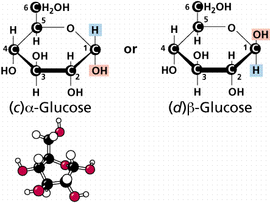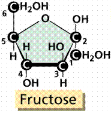
|
In an aqueous solution, glucose tends to have two
structures, a
(alpha) and b
(beta),
with an intermediate straight-chain form (shown in Figure 10). The
a form
and b
form differ in the location of one -OH group, as shown in Figure 9.
Glucose is a common hexose, six carbon sugar, in plants. The products
of photosynthesis
are assembled to form glucose. Energy from sunlight is converted into
and stored as C-C covalent bond energy. This energy is released in
living organisms in such a way that not enough heat is generated at
once to incinerate the organisms. One mole
of glucose yields 673 Kcal of energy. (A calorie is the amount of
heat needed to raise one gram of water one degree C. A Kcal has 1000
times as much energy as a cal.). Glucose is also the form of sugar
measured in the human bloodstream.
|
Figure 10. D-Glucose in various views
(stick and space-filling) from the web.
Right image
from Purves et al., Life: The Science of Biology, 4th
Edition, by Sinauer Associates (www.sinauer.com)
and WH Freeman (www.whfreeman.com),
used with permission.
|
|
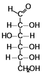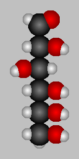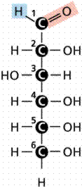
|
Disaccharides
are formed when two monosaccharides are chemically bonded together.
Sucrose, a common plant disaccharide is composed of the
monosaccharides glucose and fructose. Lactose, milk sugar, is a
disaccharide composed of glucose and the monosaccharide galactose.
The maltose that flavors a malted milkshake (and other items) is also
a disaccharide made of two glose molecules bonded together as shown
in Figure 11.
|
Figure 11. Formation of a disaccharide
(top) by condensation and structure of two common
disaccharides. Image from Purves et
al., Life: The Science of Biology, 4th Edition, by
Sinauer Associates (www.sinauer.com)
and WH Freeman (www.whfreeman.com),
used with permission.
|
|
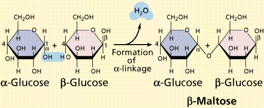
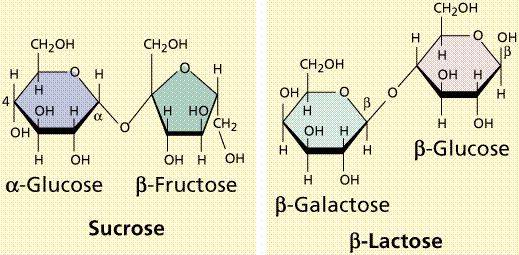
|
Polysaccharides
are large molecules composed of individual monosaccharide units. A
common plant polysaccharide is starch (shown in Figure 12), which is
made up of many glucoses (in a polypeptide these are referred to as
glucans). Two forms of polysaccharide, amylose and amylopectin makeup
what we commonly call starch. The formation of the ester bond by
condensation (the removal of water from a molecule) allows the
linking of monosaccharides into disaccharides and polysaccharides.
Glycogen (see Figure 12) is an animal storage product that
accumulates in the vertebrate liver.
|
Figure 12. Images of starch (top),
glycogen (middle), and cellulose (bottom).
Image from Purves et al., Life: The
Science of Biology, 4th Edition, by Sinauer Associates
(www.sinauer.com)
and WH Freeman (www.whfreeman.com),
used with permission.
|
|
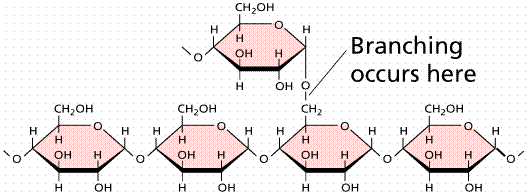
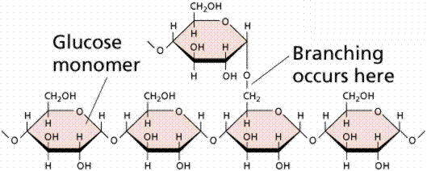
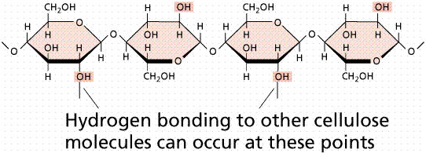
|
Cellulose, illustrated in Figure 13 and 14, is a
polysaccharide found in plant cell walls. Cellulose forms the fibrous
part of the plant cell wall. In terms of human diets, cellulose is
indigestible, and thus forms an important, easily obtained part of
dietary fiber. As compared to starch and glycogen, which are each
made up of mixtures of a
and b
glucoses, cellulose (and the animal structural polysaccharide chitin)
are made up of only b
glucoses. The three-dimensional structure of these polysaccharides is
thus constrained into straight microfibrils by the uniform nature of
the glucoses, which resist the actions of enzymes
(such as amylase) that breakdown storage polysaccharides (such a
starch).
|
Figure 13. Structure of cellulose as it
occurs in a plant cell wall. Image
from Purves et al., Life: The Science of Biology, 4th
Edition, by Sinauer Associates (www.sinauer.com)
and WH Freeman (www.whfreeman.com),
used with permission.
|
|
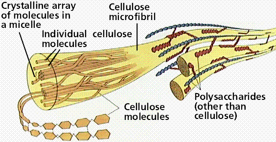
|
|
Figure 14. Cellulose Fibers from Print
Paper (SEM x1,080). This image is
copyright Dennis Kunkel at www.DennisKunkel.com,
used with permission.
|
|
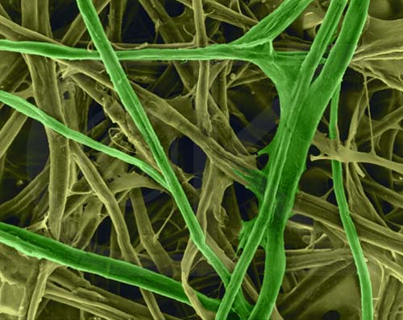
|
2. Lipids are involved mainly with
long-term energy storage. They are generally insoluble in polar
substances such as water. Secondary functions of lipids include
structural components (as in the case of phospholipids
that are the major building block in cell membranes) and "messengers"
(hormones) that play roles in communications within and between
cells. Lipids are composed of three fatty acids (usually) covalently
bonded to a 3-carbon glycerol. The fatty acids are composed of
CH2 units, and are hydrophobic/not water soluble. Some
examples of fatty acids are shown in Figure 15.
Fatty acids can be saturated (meaning they have as
many hydrogens bonded to their carbons as possible) or unsaturated
(with one or more double bonds connecting their carbons, hence fewer
hydrogens). A fat is solid at room temperature, while an oil is a
liquid under the same conditions. The fatty acids in oils are mostly
unsaturated, while those in fats are mostly saturated.
|
Figure 15. Saturated (top and middle) and
unsaturated (bottom) fatty acids. The term staurated refers
to the "saturation" of the molecule by hydrogen atoms. The
presence of a double C=C covalent bond reduces the number of
hydrogens that can bond to the carbon chain, hence the
application of therm "unsaturated".
Images from Purves et al., Life: The
Science of Biology, 4th Edition, by Sinauer Associates
(www.sinauer.com)
and WH Freeman (www.whfreeman.com),
used with permission.
|
|
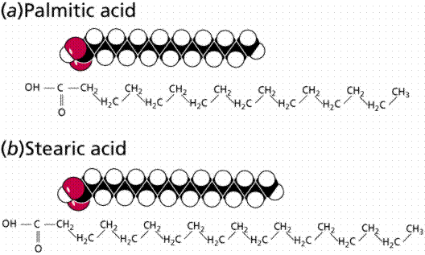
|

|
Fats
and oils
function in long-term energy storage. Animals convert excess sugars
(beyond their glycogen storage capacities) into fats. Most plants
store excess sugars as starch, although some seeds and fruits have
energy stored as oils (e.g. corn oil, peanut oil, palm oil, canola
oil, and sunflower oil). Fats yield 9.3 Kcal/gm, while carbohydrates
yield 3.79 Kcal/gm. Fats thus store six times as much energy as
glycogen.
Diets are attempts to reduce the amount of fats
present in specialized cells known as adipose cells that accumulate
in certain areas of the human body. By restricting the intakes of
carbohydrates and fats, the body is forced to draw on its own stores
to makeup the energy debt. The body responds to this by lowering its
metabolic rate, often resulting in a drop of "energy level."
Successful diets usually involve three things: decreasing the amounts
of carbohydrates and fats; exercise; and behavior modification.
Another use of fats is as insulators and cushions.
The human body naturally accumulates some fats in the "posterior"
area. Subdermal ("under the skin") fat plays a role in
insulation.
Phospholipids and glycolipids are important
structural components of cell membranes. Phospholipids, shown in
Figure 16, are modified so that a phosphate
group (PO4-) is
added to one of the fatty acids. The addition of this group makes a
polar "head" and two nonpolar "tails". Waxes are an important
structural component for many organisms, such as the cuticle, a waxy
layer covering the leaves and stems of many land plants; and
protective coverings on skin and fur of animals.
|
Figure 16. Structure of a phospholipid,
space-filling model (left) and chain model (right).
Image from Purves et al., Life: The
Science of Biology, 4th Edition, by Sinauer Associates
(www.sinauer.com)
and WH Freeman (www.whfreeman.com),
used with permission.
|
|
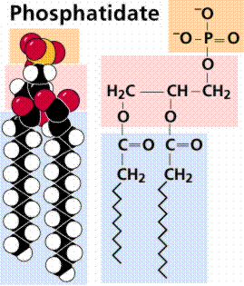
|
Cholesterol and steroids: Most mention of
these two types of lipids in the news is usually negative.
Cholesterol, illustrated in Figure 17, has many biological uses, it
occurs in cell membranes, and its forms the sheath of some types of
nerve cells. However, excess cholesterol in the blood has been linked
to atherosclerosis, hardening of the arteries. Recent studies suggest
a link between arterial plaque deposits of cholesterol, antibodies to
the pneumonia-causing form of Chlamydia, and heart attacks.
The plaque increases blood pressure, much the way blockages in
plumbing cause burst pipes in old houses.
|
Figure 17. Structure of four
steroids. Image from Purves et al.,
Life: The Science of Biology, 4th Edition, by Sinauer
Associates (www.sinauer.com)
and WH Freeman (www.whfreeman.com),
used with permission.
|
|
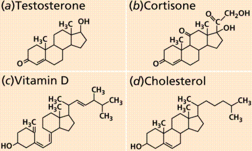
|
3. Proteins
are very important in biological systems as control and structural
elements. Control functions of proteins are carried out by
enzymes
and proteinaceous hormones.
Enzymes are chemicals that act as organic catalysts (a catalyst is a
chemical that promotes but is not changed by a chemical reaction).
Click here
for an illustrated page about enzymes. Structural proteins function
in the cell membrane, muscle tissue, etc.
The building block of any protein is the
amino
acid, which has an amino end
(NH2) and a carboxyl end (COOH). The struucture of a
generalized aminio acid as well as the specific structures of the 20
biological amino acids are shown in Figure 18 and 19 respectively.
The R indicates the variable component (R-group) of each amino acid.
Alanine and Valine, for example, are both nonpolar amino acids, but
they differ, as do all amino acids, by the composition of their
R-groups. All living things (and even viruses) use various
combinations of the same twenty amino acids. A very powerful bit of
evidence for the phylogenetic
connection of all living things.
|
Figure 18. Structure of an amino
acid. Image from Purves et al.,
Life: The Science of Biology, 4th Edition, by Sinauer
Associates (www.sinauer.com)
and WH Freeman (www.whfreeman.com),
used with permission.
|
|
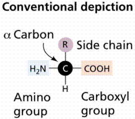
|
|
Figure 19. Structures in the R-groups of
the twenty amino acids found in all living things. Images
from Purves et al., Life: The Science of Biology, 4th
Edition, by Sinauer Associates (www.sinauer.com)
and WH Freeman (www.whfreeman.com),
used with permission.
|
|
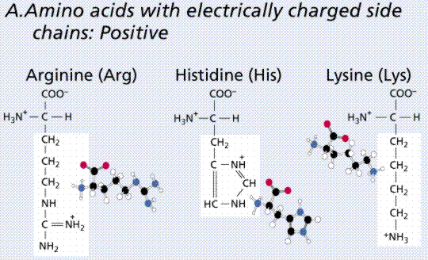
|
|
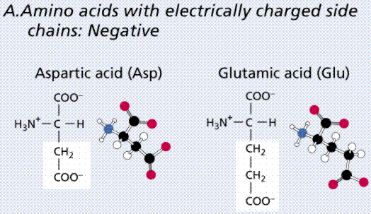
|
|
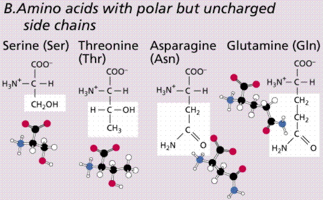
|
|
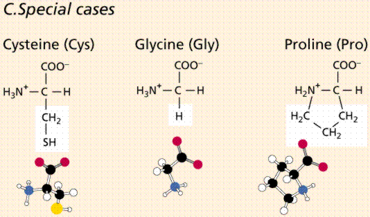
|
|
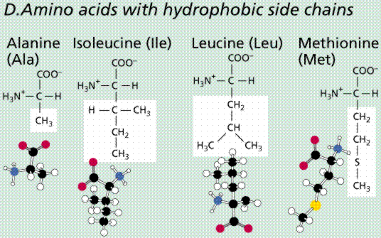
|
|
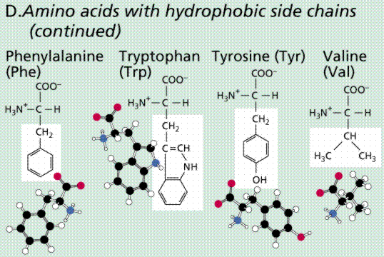
|
Amino acids are linked together by joining the
amino end of one molecule to the carboxyl end of another. Removal of
water allows formation of a type of covalent bond known as a
peptide
bond. This process is illustrated in
Figure 20.
|
Figure 20. Formation of a peptide bond
between two amino acids by the condensation (dehydration) of
the amino end of one amino acid and the acid end of the
other amino acid. The above image is
from http://zebu.uoregon.edu/internet/images/peptide.gif.
|
|
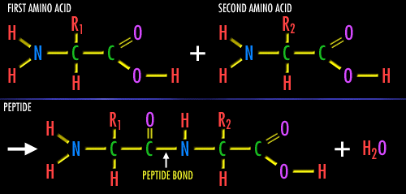
|
Amino acids are linked together into a
polypeptide, the primary
structure in the organization of proteins.
The primary structure of a protein is the sequence of amino acids,
which is directly related to the sequence of information in the RNA
molecule, which in turn is a copy of the information in the DNA
molecule. Changes in the primary structure can alter the proper
functioning of the protein. Protein function is usually tied to their
three-dimensional structure. The primary structure is the sequence of
amino acids in a polypeptide..
The secondary
structure is the tendency of the
polypeptide to coil or pleat due to H-bonding between R-groups. The
tertiary
structure is controlled by bonding (or in
some cases repulsion) between R-groups. Tertiary structure of an HIV
protein and its similarity to gamma interferon are shown in Figure
22. Many proteins, such as hemoglobin,
are formed from one or more polypeptides. Such structure is
termed
quaternary structure. Structural proteins,
such as collagen, have regular repeated primary structures. Like the
structural carbohydrates, the components determine the final shape
and ultimately function. Collagens have a variety of functions in
living things, such as the tendons, hide, and corneas of a cow.
Keratin is another structural protein. It is found in fingernails,
feathers, hair, and rhinoceros horns. Microtubules, important in cell
division and structures of flagella and cilia (among other things),
are composed of globular structural proteins.
4.
Nucleic
acids are polymers
composed of monomer
units known as nucleotides.
There are a very few different types of nucleotides. The main
functions of nucleotides are information storage (DNA), protein
synthesis (RNA), and energy transfers (ATP and NAD). Nucleotides,
shown in Figure 22, consist of a sugar, a nitrogenous base, and a
phosphate. The sugars are either ribose or deoxyribose. They differ
by the lack of one oxygen in deoxyribose. Both are pentoses usually
in a ring form. There are five nitrogenous bases. Purines (Adenine
and Guanine) are double-ring structures, while pyrimidines (Cytosine,
Thymine and Uracil) are single-ringed.
|
Figure 22. Structure of two types of
nucleotide. Image from Purves et al.,
Life: The Science of Biology, 4th Edition, by Sinauer
Associates (www.sinauer.com)
and WH Freeman (www.whfreeman.com),
used with permission.
|
|
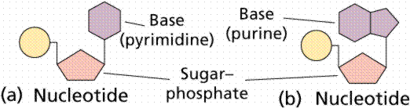
|
Deoxyribonucleic
acid (better known as DNA) is the physical
carrier of inheritance for 99% of living organisms. The bases in DNA
are C, G, A and T, as shown in Figure 23. We will learn more about
the DNA structure and function later in the course (click
here
for a quick look [actually take all the time you want!]
;)).
|
Figure 23. Structure of a segment of a
DNA double helix. Image from Purves
et al., Life: The Science of Biology, 4th Edition, by
Sinauer Associates (www.sinauer.com)
and WH Freeman (www.whfreeman.com),
used with permission.
|

|
DNA functions in information storage. The English
alphabet has 26 letters that can be variously combined to form over
50,000 words. DNA has four letters (C, G, A, and T, the nitrogenous
bases) that code for twenty words (the twenty amino
acids found in all living things) that can
make an infinite variety of sentences (polypeptides). Changes in the
sequences of these basesinformation can alter the meaning of a
sentence.
For example take the sentence: I saw Elvis.
This implies certain knowledge (that I've been out in the sun too
long without a hat, etc.).
If we alter the sentence by inverting the middle
word, we get: I was Elvis (thank you, thank you very much).
Now we have greatly altered the information.
A third alteration will change the meaning: I was
Levis. Clearly the original sentence's meaning is now greatly
changed.
Changes in DNA information will be translated into
changes in the primary
structure of a polypeptide, and from there
to the secondary
and tertiary
structures. A mutation
is any change in the DNA base sequence. Most mutations are harmful,
few are neutral, and a very few are beneficial and contribute the
organism's reproductive success. Mutations are the wellspring of
variation, variation is central to Darwin and Wallace's theory of
evolution by natural
selection.
Ribonucleic
acid (RNA), shown in Figure 24 was
discovered after DNA. DNA, with exceptions in chloroplasts and
mitochondria, is restricted to the nucleus (in eukaryotes, the
nucleoid
region in prokaryotes). RNA occurs in the nucleus as well as in the
cytoplasm (also remember that it occurs as part of the
ribosomes
that line the rough endoplasmic reticulum). There are three types of
RNA:
Messenger
RNA (mRNA) is the blueprint for
construction of a protein.
Ribosomal
RNA (rRNA) is the construction site where
the protein is made.
Transfer
RNA (tRNA) is the truck delivering the
proper amino acid to the site at the right time.
Details of RNA and its role in protein synthesis
are available by clicking here.
|
Figure 24. Structure of the RNA
molecule. Image from Purves et al.,
Life: The Science of Biology, 4th Edition, by Sinauer
Associates (www.sinauer.com)
and WH Freeman (www.whfreeman.com),
used with permission.
|
|
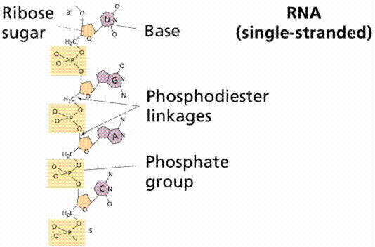
|
Adenosine triphosphate, better known as ATP
(Figure 25), the energy currency or coin of the cell, transfers
energy from chemical bonds to endergonic (energy absorbing) reactions
within the cell. Structurally, ATP consists of the adenine nucleotide
(ribose sugar, adenine base, and phosphate group,
PO4-2) plus two other phosphate
groups.
Energy is stored in the covalent bonds between
phosphates, with the greatest amount of energy (approximately 7
kcal/mole) in the bond between the second and third phosphate groups.
This covalent bond is known as a pyrophosphate bond.
|
Figure 25. A
cartoon and space-filling view of ATP.
Image from Purves et al., Life: The
Science of Biology, 4th Edition, by Sinauer Associates
(www.sinauer.com)
and WH Freeman (www.whfreeman.com),
used with permission.
|

|
- Dissolved substances are called solutes; a fluid in which one
or more substances can dissolve is called a solvent. Describe
several solutions that you use everyday in terms of what is the
solvent and what is the solute.
- Define acid and base and be able to cite an example of
each.
- The concentration of free hydrogen ions in solutions is
measured by the pH scale..
- Nearly all large biological molecules have theor organization
influenced by interactions with water. Describe this interaction
as it exists with carbohydrate molecules.
- Be able to list the three most abundant elements in living
things.
- Each carbon atom can form as many as four covalent bonds with
other carbon atoms as well as with other elements. Be able to
explain why this is so.
- Be able to list the four main groups of organic molecules and
their functions in living things.
- Enzymes are a special class of proteins that speed up chemical
reactions in cells. What about the structure of proteins allows
for the reaction specificity that occurs with most enzymes.
- Condensation reactions result in the formation of covalent
bonds between small molecules to form larger organic molecules. Be
able to describe a condensation reaction in words.
- Be able to describe what occurs during a hydrolysis
reaction.
- Be able to define carbohydrates and list their functions.
- The simplest carbohydrates are sugar monomers, the
monosaccharides. Be able to give examples and their
functions.
- A polysaccharide is a straight or branched chain of hundreds
or thousands of sugar monomers, of the same or different kinds. Be
able to give common examples and their functions.
- Be able to define lipids and to list their functions.
- Distinguish betwen a saturated fat and an unsaturated fat. Why
is such a distinction a life and death matter for many
people?
- A phospholipid has two fatty acid tails attached to a glycerol
backbone. What is the importance of these molecules.
- Define steroids and describe their chemical structure. Be able
to discuss the importance of the steroids known as cholesterol and
hormones.
- Be able to describe proteins and cite their general
functions.
- Be prepared to make a sketch and name the three parts of every
amino acid.
- Describe the complex structure of a protein through its
primary, secondary, tertiary, and quaternary structure. How does
this relate to the three-dimensional structure of proteins?
- Describe the three parts of every nucleotide..
- Be able to give the general functions of DNA and RNA
molecules.
- The chemical reaction where water is removed during the
formation of a covalent bond linking two monomers is known as ___.
a) dehydration; b) hydrolysis; c) photosynthesis; d) protein
synthesis
- The monomer that makes up polysaccharides is ____. a) amino
acids; b) glucose; c) fatty acids; d) nucleotides; e)
glycerol
- Proteins are composed of which of these monomers? a) amino
acids; b) glucose; c) fatty acids; d) nucleotides; e)
glycerol
- Which of these is not a function of lipids? a) long term
energy storage; b) structures in cells; c) hormones; d) enzymes;
e) sex hormones
- All living things use the same ___ amino acids. a) 4; b) 20;
c) 100; d) 64
- The sequence of ___ bases determines the ___ structure of a
protein. a) RNA, secondary; b) DNA, quaternary; c) DNA, primary;
d) RNA, primary
- Which of these is not a nucleotide base found in DNA? a)
uracil; b) adenine; c) guanine; d) thymine; e) cytosine
- Which of these carbohydrates constitutes the bulk of dietary
fiber? a) starch; b) cellulose; c) glucose; d) fructose; e)
chitin
- A diet high in _____ is considered unhealthy, since this type
of material is largely found in animal tissues. a) saturated fats;
b) testosterone; c) unsaturated fats; d) plant oils
- The form of RNA that delivers information from DNA to be used
in making a protein is ____. a) messenger RNA; b) ribosomal RNA;
c) transfer RNA; d) heterogeneous nuclear RNA
- The energy locked inside an organic molecule is most readily
accessible in a ___ molecule. a) fat; b) DNA; c) glucose; d)
chitin; e) enzyme
- Phospholipids are important components in ____. a) cell walls;
b) cytoplasm; c) DNA; d) cell membranes; e) cholesterol
- Chemicool
A colorful and easy to use Periodic Table. More information
about elements than most of us would want.
- WebElements
Much more detailed Periodic Table. Even more information about
those pesky elements! If this site is busy there are a series of
mirror
sites.
- James K.
Hardy's Chemistry Site (U of Akron). Powerpoint slides (that
run over the web) and a series of animations...a must see!
- MathMol
Water Module Images, text, and animations about water.
- Large
Molecules Problem Set Biology Project (University of Arizona).
Questions and answers along with clear tutorials about large
molecules. Excellent site for many topics in addition to this
one!
- Amino
Acid Anatomy Cartoons and animations on the basics of amino
acids.
- Amino
Acids Linear formulae and links to images of the twenty amino
acids common to all life (at least as we know it).
- Amino Acid
Properties Structures and other info about amino acids.
- Enzymes
(Western Michigan University) An excellent page illustrating major
concepts about enzymes.
- DNA and
RNA (Access Excellence)
- Monosaccharide
Browser (Leeds University, UK) View space-filling models of a
variety of monosaccahrides. Good for checking out the difference
between glucose and fructose. Inquiry minds want to know!
- Ribozymes
Information to link the RNA world to the DNA and RNA world. A
summary of ribozymes by Access Excellence.
- The RNA World
(IMB Jena, Germany) Links to WWW RNA sites and resources. Lots of
very cool images.
Text ©1992, 1994, 1997, 1998, 1999, 2000, 2001, 2002, 2007, by
M.J. Farabee, all rights reserved. Use of text for educational
purposes is encouraged.
Back to Table of Contents
| Go To CELLS
I: ORIGINS
Email: mj.farabee@emcmail.maricopa.edu
Last modified:
The URL of this page is:
{kind=link}